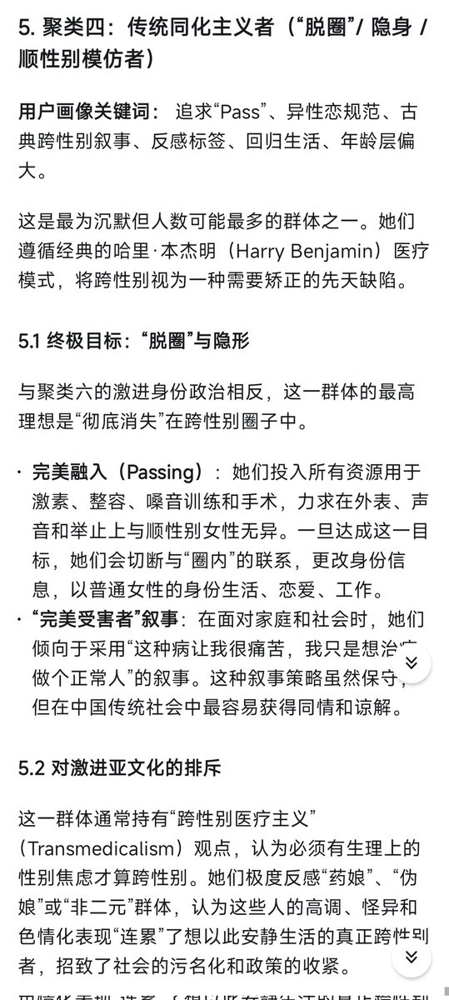

時璃風医詩🌈🏳️🌈
@hagishigure
@MisakaNo10777 是己烯雌酚！不是乙！醇没有乙烯基的！（化学人狂怒）

Misaka10777
@MisakaNo10777
图片出自:《中文圈MtF群体社会分层与亚文化聚类简单研究》。这个聚类四（包括家长党和家暴党，家长不管党）并不在网络上到处活跃的，但是实际上人数占比很大的，只是很难被大众的视线关注到。
https://t.co/VFG1fvhkim https://t.co/aejtnymsBz